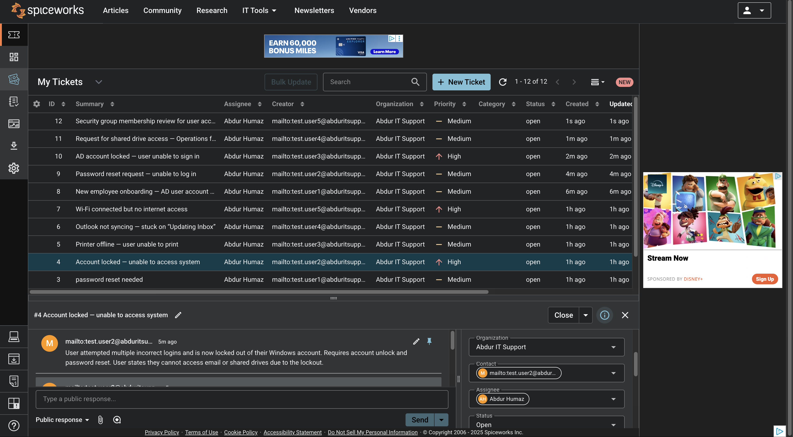

Abdur Humaz — IT Support Technician
Help Desk • Ticketing (Spiceworks) • Windows & macOS • Active Directory Basics • Networking (DNS/DHCP/IP)
About
Entry-level IT Support focused on fast, clear troubleshooting and clean documentation. This portfolio shows real ticket flows I created, plus practical network and system checks. I’m ready for Tier 1 help desk work and can start immediately.
Ticketing System: Spiceworks Cloud Helpdesk
Core Skills: Password resets, account unlocks, Outlook fixes, printer mapping, Wi-Fi diagnostics
Tools: macOS Terminal, System Settings, Spiceworks, AD basics
Email Me Download Resume (PDF)Highlights
• Built a realistic help desk queue with 10 tickets (Wi-Fi, Outlook, printer, AD requests).
• Documented steps and priorities like a real support workflow.
• Captured networking evidence (ifconfig, ping) and config pages.
Ticketing — Sample Queue (Spiceworks)
Help Desk queue showing priorities, timestamps, and contacts.
Active Directory — Requests & Tasks
New user onboarding: create AD user, O365 mailbox, group membership, temporary password.
Password reset: set temp password, require change at next logon.
Account unlock: unlock after lockout; verify successful sign-in.
Shared drive: grant Operations folder access; add security group.
Group review: audit group membership and remove outdated access.
Troubleshooting Evidence

Network interfaces via ifconfig.

Connectivity check: ping -c 4 google.com.

macOS TCP/IP configuration (DHCP, IP, subnet, router).

System Information overview (model, chip, memory, OS).
Email: abdulhamza510@gmail.com • Phone: 510-666-7126
© 2025 Abdur Humaz • Built with HTML/CSS — Dark Theme